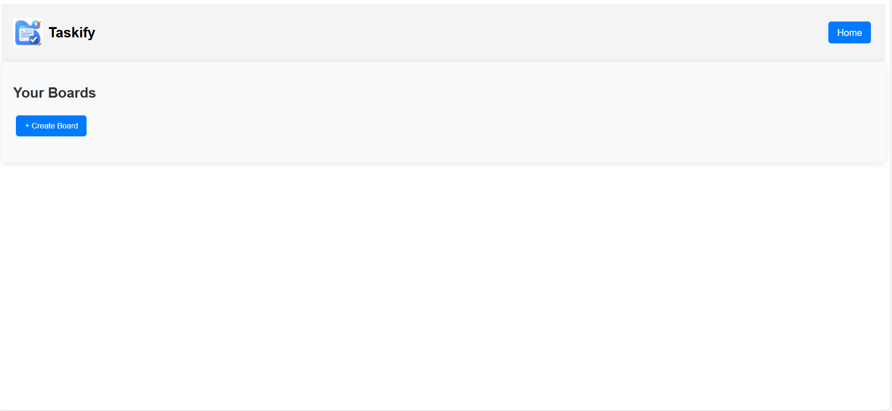
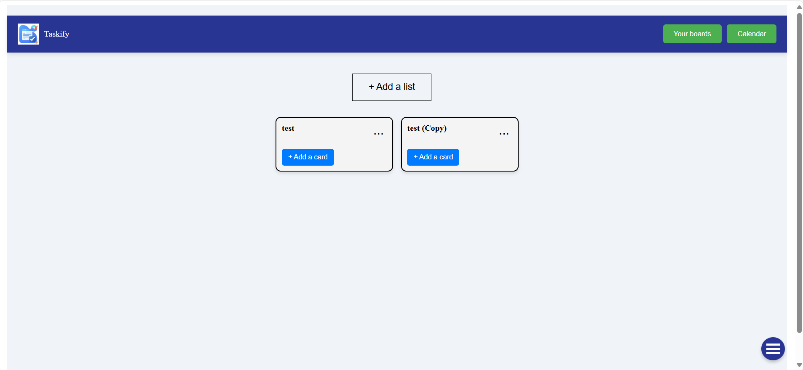
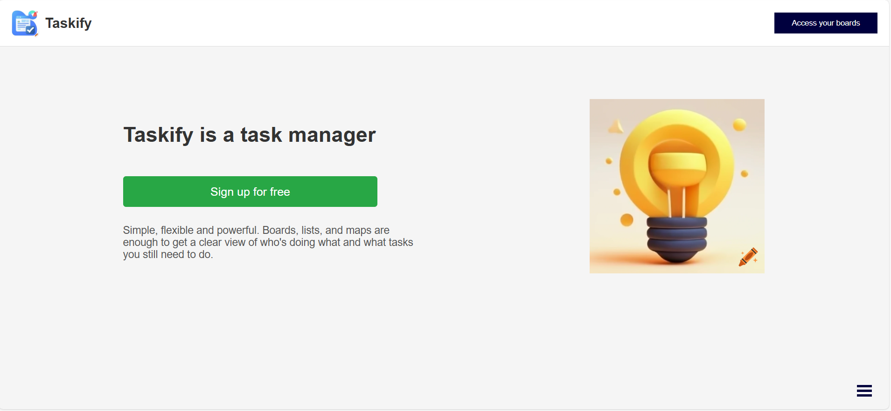

Simple, flexible and powerful. The task manager that works the way you think.
Video demonstrationCreate custom boards to organize your tasks exactly how you want them.
The goal is to manage it's task more easily
Here is the Taskify home page
Taskify was born from a personal need to organize my daily tasks simply. The goal is to help users manage their tasks, set priorities. Unlike more popular solutions like Trello or Microsoft To Do. But Taskify focuses more on customization and simplicity.
Full Stack Developer